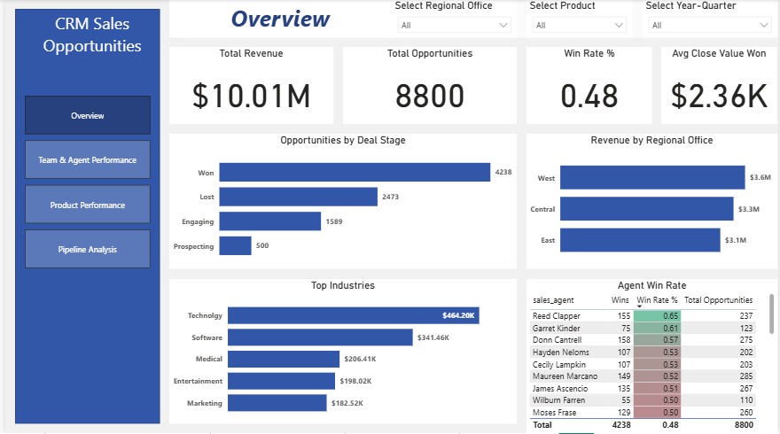
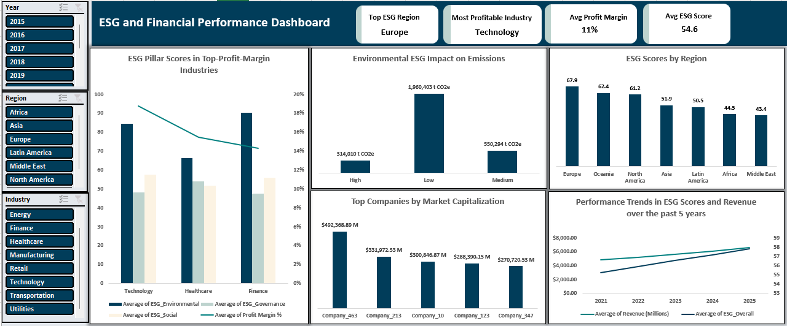

Power BI
Built comprehensive sales performance dashboard analyzing 8,800+ opportunities,
identifying top-performing agents and revenue-generating products.
Identified pipeline bottlenecks causing 30% deal loss at negotiation stage and 24% performance gap between top/bottom agents.


Analyzed 300+ companies across 9 industries exploring relationships between ESG scores and financial metrics. Found 36.6% revenue growth correlation with high ESG scores.

Built an end-to-end e-commerce analytics project using PostgreSQL and Power BI, transforming 100K+ transactions into actionable business insights.
Designed a normalized 8-table database, developed 1o advanced SQL analytical procedures, and created an interactive dashboard that identified 110K+ in at-risk revenue.